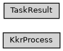

task_result
Full name: ase2sprkkr.outputs.task_result
Module class hierarchy

Description
This module contains classes, used by parsers of the output files
Classes
|
Class, that run a process and read its output using underlined process reader (see |
|
A base class for a result of a runned task (kkrscf executable) |